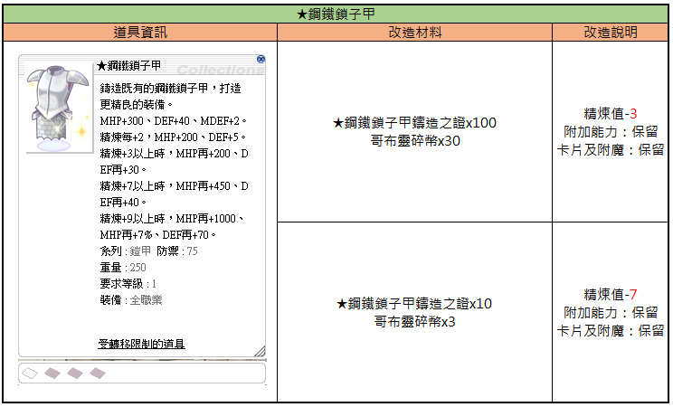
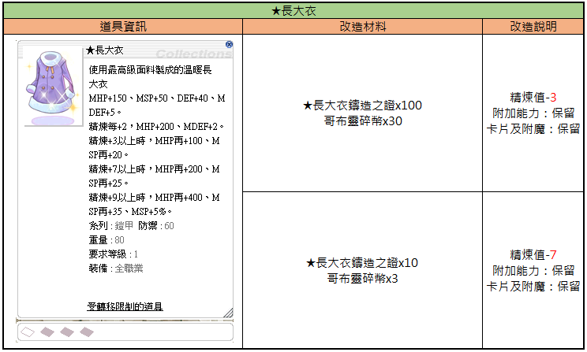
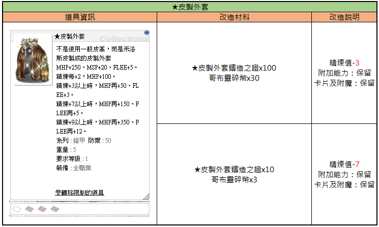
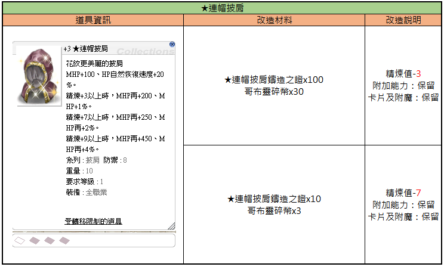
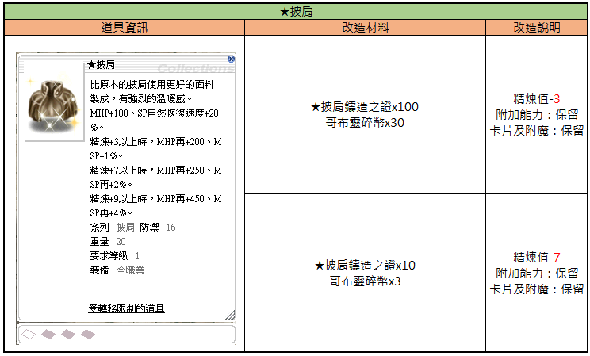
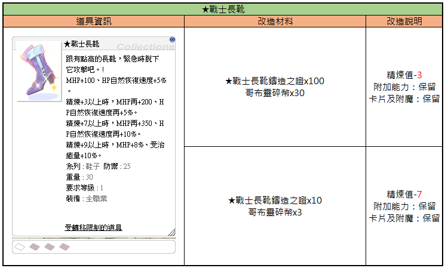
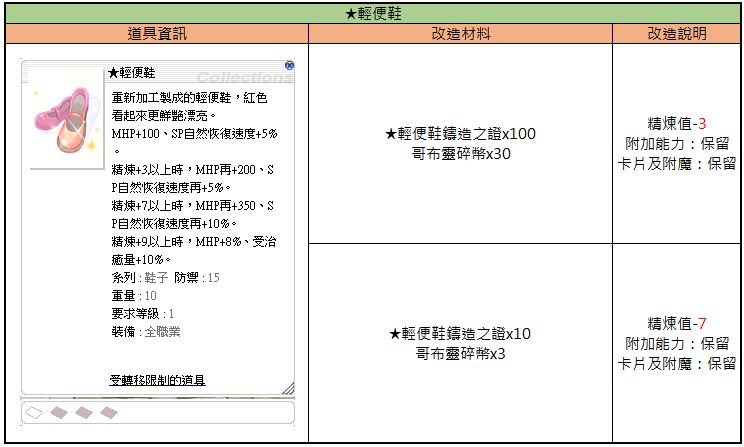

Klassische Rüstung — Activation (經典防具活化)
Die offiziellen Screenshots aller klassischen Rüstungen, die sich über das Activation-System aktivieren lassen — vollständige Bilderliste mit Update-Status.
🛡️ Worum geht's?
Analog zum Tier-2-★-Waffen-Activation gibt es auch für klassische Rüstungen (經典防具) einen Activation-Pfad. Dieser Artikel listet die offiziellen Referenz-Screenshots aller aktivierbaren Rüstungen — mit Stand 10. Februar 2026.
📋 Activation-Liste
Update 10.02.2026 — komplette offizielle Screenshots:

Diese Tabelle zeigt die Upgrade-Anforderungen und Boni für die ★Steel Chain Mail in Ragnarok Zero.
| Item-Informationen | Upgrade-Materialien | Upgrade-Hinweise |
|---|---|---|
| ★Steel Chain Mail: MHP+300, DEF+40, MDEF+2. Refine +2: MHP+200, DEF+5. Refine +3: MHP+200, DEF+30. Refine +7: MHP+450, DEF+40. Refine +9: MHP+1000, MHP+7%, DEF+70. Type: Armor, DEF: 75, Weight: 250, Required Level: 1, Class: All. | ★Steel Chain Mail Certificate x100, Goblin Shard x30 | Refine -3. Bonus: Retained. Cards & Enchants: Retained. |
| ★Steel Chain Mail Certificate x10, Goblin Shard x3 | Refine -7. Bonus: Retained. Cards & Enchants: Retained. |
Der Gegenstand ist bei Handelstransfers eingeschränkt.

Diese Tabelle zeigt die Gegenstandsinformationen sowie die erforderlichen Materialien und Bedingungen für die Modifikation des ★Long Coat.
| Gegenstandsinformationen | Modifikationsmaterialien | Modifikationsbeschreibung |
|---|---|---|
| ★Long Coat: Ein warmer langer Mantel aus hochwertigem Stoff. MHP+150, MSP+50, DEF+40, MDEF+5. Bei jeder Refine-Stufe +2: MHP+200, MDEF+2. Ab Refine +3: MHP+100, MSP+20. Ab Refine +7: MHP+200, MSP+25. Ab Refine +9: MHP+400, MSP+35, MSP+5%. Typ: Armor, DEF: 60, Gewicht: 80, Benötigtes Level: 1, Ausrüstbar für: Alle Klassen. Gegenstand unterliegt Handelsbeschränkungen. | ★Long Coat Casting Proof x100, Goblin Shard x30 | Refine-Wert -3, Zusätzliche Fähigkeiten: beibehalten, Karten und Verzauberungen: beibehalten |
| ★Long Coat Casting Proof x10, Goblin Shard x3 | Refine-Wert -7, Zusätzliche Fähigkeiten: beibehalten, Karten und Verzauberungen: beibehalten |
Die Modifikationsbeschreibung gibt an, dass bei der Durchführung die Refine-Stufe reduziert wird, während Karten und Verzauberungen des ursprünglichen Gegenstandes erhalten bleiben.

Diese Tabelle zeigt die für das Item 'Leather Jacket' erforderlichen Materialien und Bedingungen für zwei verschiedene Veredelungsstufen.
| Item Informationen | Veredelungsmaterialien | Veredelungsbeschreibung |
|---|---|---|
| Leather Jacket: A leather jacket made of Milos skin instead of regular leather. MHP+250, MSP+20, FLEE+5. Every 2 Refine, MHP+100. If Refine +3 or higher, additional MHP+50, FLEE+3. If Refine +7 or higher, additional MHP+150, FLEE+5. If Refine +9 or higher, additional MHP+350, FLEE+12. Type: Armor, DEF: 50, Weight: 5, Req Level: 1, Class: All. | Leather Jacket Casting Certificate x100, Goblin Shard x30 | Refine -3, Bonus abilities: Kept, Cards and Enchants: Kept |
| Leather Jacket (Same stats as listed) | Leather Jacket Casting Certificate x10, Goblin Shard x3 | Refine -7, Bonus abilities: Kept, Cards and Enchants: Kept |
Die im Feld 'Item Informationen' aufgeführten Statistiken gelten für die Basis-Version des Items. Das Item ist für den Handel gesperrt.

Diese Tabelle zeigt die Gegenstandsinformationen sowie die erforderlichen Materialien und Bedingungen für die Aufwertung des ★Hooded Mantle.
| Gegenstandsinformationen | Umwandlungsmaterialien | Umwandlungsdetails |
|---|---|---|
| +3 ★Hooded Mantle Ein Mantel mit schöneren Mustern. MHP +100, HP-Regeneration +20%. Bei Refine +3 oder höher, zusätzlich MHP +200, MHP +1%. Bei Refine +7 oder höher, zusätzlich MHP +250, MHP +2%. Bei Refine +9 oder höher, zusätzlich MHP +450, MHP +4%. Typ: Garment, DEF: 8 Gewicht: 10 Benötigtes Level: 1 Klasse: Alle Jobs Handelsbeschränkter Gegenstand | ★Hooded Mantle Refinement Certificate x100 Goblin Shard x30 | Refine -3 Zusätzliche Boni: beibehalten Karten und Verzauberungen: beibehalten |
| ★Hooded Mantle Refinement Certificate x10 Goblin Shard x3 | Refine -7 Zusätzliche Boni: beibehalten Karten und Verzauberungen: beibehalten |
Die Tabelle beschreibt die Kosten für das 'Refinement' bzw. die Umwandlung des Gegenstandes ★Hooded Mantle.

Diese Tabelle zeigt die Anforderungen und Effekte für die Modifikation des ★Garment Gegenstandes.
| Gegenstandsinformationen | Modifikationsmaterialien | Modifikationsbeschreibung |
|---|---|---|
| ★Garment: Hergestellt aus besserem Stoff als das ursprüngliche Garment, fühlt sich sehr warm an. MHP+100, SP Regeneration +20%. Bei Refine +3 oder höher, MHP+200, MSP+1%. Bei Refine +7 oder höher, MHP+250, MSP+2%. Bei Refine +9 oder höher, MHP+450, MSP+4%. Typ: Garment, DEF: 16, Gewicht: 20, Benötigtes Level: 1, Ausrüstbar für: Alle Klassen. (Gegenstand ist an den Account gebunden) | ★Garment Proof of Forging x100, Goblin Shard x30 | Refine -3, Bonus-Stats: behalten, Karten und Verzauberungen: behalten |
| ★Garment Proof of Forging x10, Goblin Shard x3 | Refine -7, Bonus-Stats: behalten, Karten und Verzauberungen: behalten |
Die Modifikationsbeschreibung gibt an, dass der Refine-Wert um den angegebenen Betrag reduziert wird, während Karten, Verzauberungen und Bonus-Stats beim Prozess erhalten bleiben.

Diese Tabelle zeigt die Gegenstandsinformationen für die Warrior Boots und die Anforderungen für deren zwei mögliche Modifikationsstufen.
| Gegenstandsinformationen | Modifikationsmaterialien | Modifikationsbeschreibung |
|---|---|---|
| Warrior Boots: MHP+100, HP Recovery +5%. Refine +3: MHP+200, HP Recovery +5%. Refine +7: MHP+350, HP Recovery +10%. Refine +9: MHP+8%, Heal effectiveness +10%. Type: Shoes, DEF: 25, Weight: 30, Required Level: 1, Class: All. | Warrior Boots Certificate x100, Goblin Shard x30 | Refine -3, Bonus: Retained, Cards & Enchants: Retained |
| Warrior Boots: MHP+100, HP Recovery +5%. Refine +3: MHP+200, HP Recovery +5%. Refine +7: MHP+350, HP Recovery +10%. Refine +9: MHP+8%, Heal effectiveness +10%. Type: Shoes, DEF: 25, Weight: 30, Required Level: 1, Class: All. | Warrior Boots Certificate x10, Goblin Shard x3 | Refine -7, Bonus: Retained, Cards & Enchants: Retained |
Der Gegenstand kann nicht an andere Charaktere übertragen werden.

Tabelle, die die benötigten Materialien und Modifikationen für das Upgrade der 'Light Shoes' in Ragnarok Zero zeigt.
| Item-Informationen | Umwandlungsmaterialien | Umwandlungsdetails |
|---|---|---|
| Light Shoes: MHP+100, SP recovery rate+5%. Refine +3: MHP+200, SP recovery rate+5%. Refine +7: MHP+350, SP recovery rate+10%. Refine +9: MHP+8%, Healing received+10%. Type: Shoes, DEF: 15, Weight: 10, Req Lvl: 1, Class: All. | Light Shoes Certificate x100, Goblin Shard x30 | Refine value -3, Enchants: Kept, Cards/Refinements: Kept |
| Light Shoes (Item stats listed in first row) | Light Shoes Certificate x10, Goblin Shard x3 | Refine value -7, Enchants: Kept, Cards/Refinements: Kept |
Die Fußnote im Item-Fenster besagt, dass der Handel mit diesem Gegenstand eingeschränkt ist.
💡 Praxis-Tipps
- Mix mit Weapon Activation: Wenn du schon eine ★-Waffe trägst, lohnt sich die Aktivierung der passenden Rüstung als Gesamt-Setup
- Materialien sichern: Auch Armor Activation braucht Reagenzien — vor dem Start planen
- Re-Roll möglich: Wie bei Waffen-★-Activation kann auch hier gewürfelt werden — je nach Zielprofil Re-Roll nutzen
⚠️ Hinweise
- Items & Bonuswerte richten sich nach den In-Game-Einstellungen.
- Änderungen oder Ergänzungen stets auf der Originalseite prüfen.